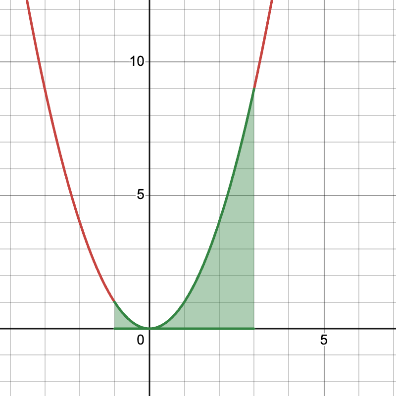

MTH 202 Review
What questions did you have?
Specific Questions
- How does the chain rule work?
- How does the quotient rule work?
- How do you find a tangent line?
- What is a Riemann sum?
- or more generally, how do you do #4?
- Is this algebra move valid?
General Questions
- How do you do #1c?
- How do you do integrals / integration problems?
- How you remember Calc I formulas?
- How should I review this stuff??
What should I remember from Calc I?
In general, I’m not a fan of memorization. But…
. . .
there are basic facts that come up often enough that you should probably know them without looking up
Derivatives
- Derivatives of basic functions like \(x^n\), \(e^x\), \(\sin(x)\), etc.
- Product, quotient, chain rules
- Derivatives are slopes of tangent lines
- Derivatives are rates of change
(this list is not exhaustive)
Integrals and Antiderivatives
\[ \int x^2 \, dx \]
. . .
This is an indefinite integral aka an anti-derivative:
Find the function(s) whose derivative is \(x^2\)
. . .
\[ \frac{1}{3} x^3 + C \]
Example 2
\[ \int_{-1}^3 x^2 \, dx \]
. . .
This is a definite integral. Can represent area under a graph.

Fundamental Theorem of Calculus (the second one)
\[ \int_a^b f(x) \, dx = F(b) - F(a) \] where \(F(x)\) is an antiderivative of \(f(x)\)
. . .
So…
\[ \int_{-1}^3 x^2 \, dx = \frac{1}{3} x^3 \, \Bigg \rvert_{-1}^3 = \frac{1}{3}27 - \frac{1}{3}(-1) = \frac{28}{3} \]
Takeaways
- Should know basic derivatives and differentiation rules
- Be prepared to look up Calc I facts that you don’t know
- Chapter 1-4 of our book
- GVSU MTH201 youtube channel
- GVSU MTH202 youtube channel
- Paul’s online notes
- Math Resource Center (MRC)
- Your friendly neighborhood instructor (that’s me!)